DocuSign Services and Enterprise Connectors
DocuSign is an e-signature solution that enables people to send, sign, and approve documents, materials, and transactions anywhere and anytime using any device.
ProcessMaker enterprise connectors are available for download through the connector public library to work with DocuSign services.
DocuSign Services
Each connector has its own configuration and parameters to be defined. Therefore, it is recommended to read the DocuSign API documentation.
- getTemplateRecipients: Retrieves the roles defined for the template.
- CreateEnvelopeFromTemplateID: Creates and sends an envelope from a template ID.
- createSendEnvelope: Creates and sends an envelope or creates a draft envelope.
- getEnvelopeStatus: Gets information about a given envelope.
- getLoginInformation: Gets the login information of a specific user.
- getTemplates: Retrieves all the templates defined in the account.
DocuSign Example
This example show you how to create a document from a DocuSign template and send it to one or more users to be signed and be approved. DocuSign automatically verifies that the document is signed by all pertinent users and sends an email to the recipient when the process is complete. This example demonstrates the following:
- Configuring the DocuSign account
- Configuring DocuSign connectors
- Designing the process
- Running a case
Configuring the DocuSign Account
To manage DocuSign endpoints, it is necessary to configure your DocuSign account first. To do so, follow these steps:
Log in to your DocuSign account (or sign up for a free developer trial account here).
Click the little arrow next to your user image, and then click the Go to Admin option.
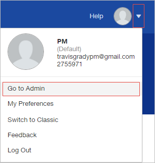
The DocuSign Admin window opens. In the menu of the left side of the window, select API and Keys.
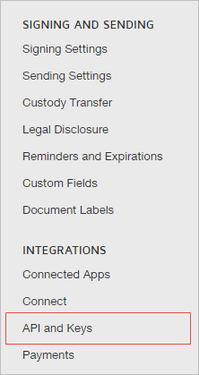
In the Add and Integrator Key Information section, click the Add Integrator Key button.

The Add API Integrator Key window displays. In the App Description field enter a name. In this example the name of the integrator key is "ProcessMaker 3.2". After that, click Add.
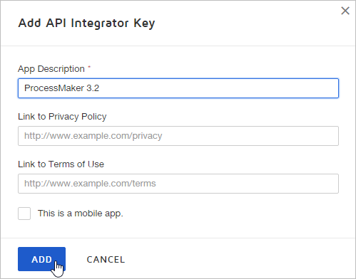
A new integrator key creates and its details displays in the Edit API Integrator Key window. Copy the code of the Integrator Key field. The integrator key code will be used along with your account credentials to configure each DocuSign connector. Then, click Save.
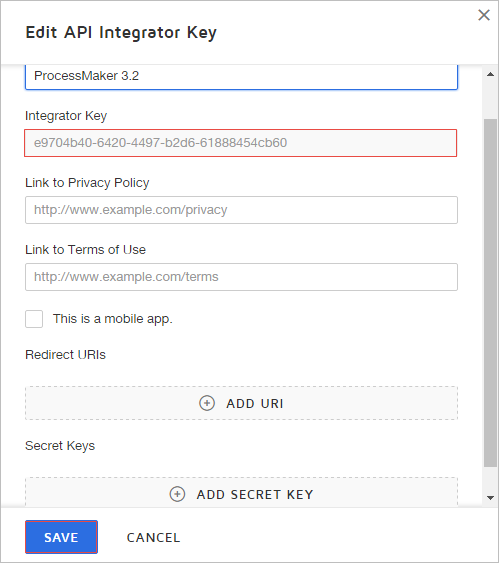
The new integrator key is listed in the My Integrator Keys section.
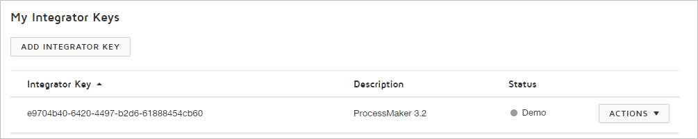
To configure the DocuSign connectors, it is necessary to retrieve the account ID as well. Click the little arrow next to your user icon, then in the menu displayed, copy your account ID (as noted in the image below).
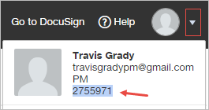
Go back to DocuSign by clicking the Go to DocuSign option next to the Help option.
In the main menu create a template by going to Templates and then clicking the New button. In the menu displayed, select Create Template.

In the Template Name and Description section, enter a template name and a brief description if desired. In this example the template is named "Security Deposit Receipt".

Scroll down the page and add a .pdf document by clicking the Add Document button.

Add three recipients with three roles: Signer1, Signer2 and Signer3. Leave the Name and Email fields of each recipient empty. Since the ProcessMaker process uses the name and email of the ProcessMaker users, these fields fill automatically. Then, click Next.
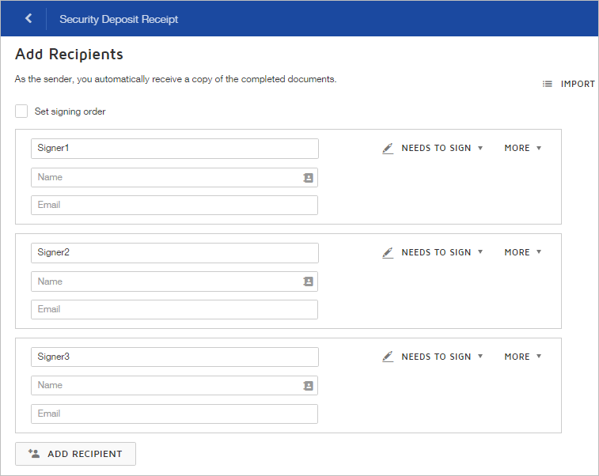
On the following page, configure the fields on the document that will be completed by the recipients. After the document is configured, click Save and Close.
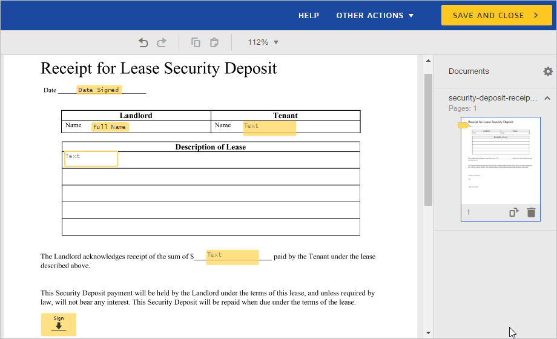
The new template lists under the My Templates section.

Click the name of the template to review or edit the configuration. Make sure the three recipients are set as shown in the image below.

Configuring DocuSign Connectors
Configure Enterprise Connectors in your ProcessMaker instance to correctly run DocuSign.
Connectors
To configure Enterprise Connectors of DocuSign, follow these steps:
Go to Admin > PM Connectors > Connectors menu.
The Connectors screen displays. At the top right of the screen, click the Download button to download the necessary connectors from the connectors library.
The Download Connectors from the Library screen displays. In the Services drop-down, select Docu Sign.

All the available connectors for the DocuSign service display in the same screen. For this example, download the following three connectors by clicking the Download button for each connector:

The connector status changes to Downloaded. Next to the Status column, the Replace button displays for each connector. Click Close.
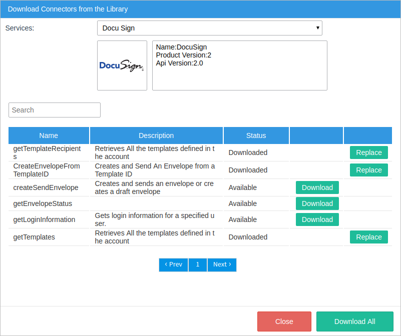
Note: Since it is the first time a DocuSign connector is downloaded from the library into the workspace, after downloading all the connectors, the Docu Sign and No authentication authentication configuration, and the Docu Sign service automatically download.
The connectors are listed. Click Edit for each connector to change its settings.
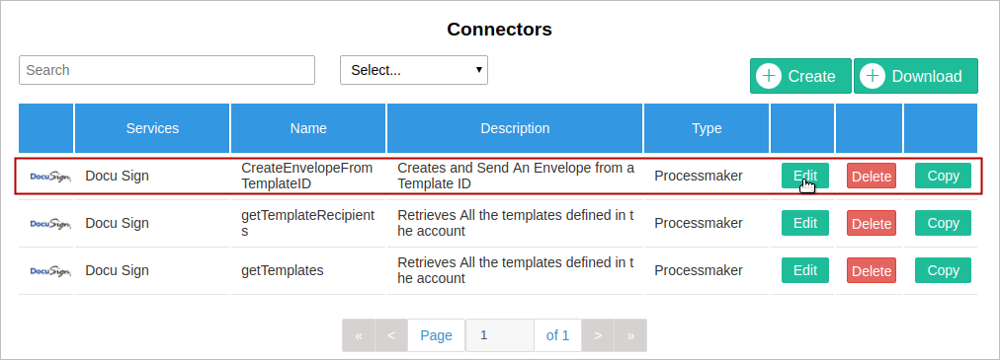
The Connectors screen displays. In the URL field, replace each connector's {accountId} parameter with an available account ID number of your DocuSign account. In this example the account ID is "2755971".
getTemplates URL
https://demo.docusign.net/restapi/v2/accounts/2755971/templatesgetTemplatesRecipients URL
https://demo.docusign.net/restapi/v2/accounts/2755971/templates/{templateID}/recipientsCreateEnvelopeFromTemplateID URL
https://demo.docusign.net/restapi/v2/accounts/2755971/envelopes
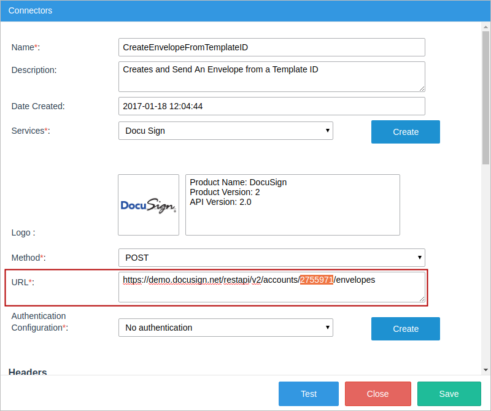
In the Headers section of each connector, modify the following two headers:
- Content-Type: application/json
- X-DocuSign-Authentication: {"Username":"your-email@domain.com", "Password":"Setitiruces0", "IntegratorKey":"5e980b60-9251-4751-8593-21548292a7ab"}
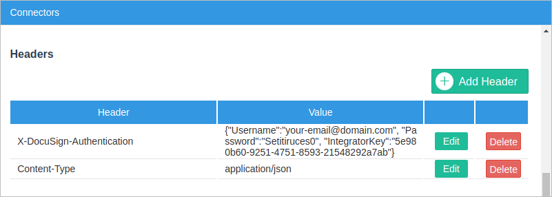
Replace the parameters in blue with your own user name, password and integrator key provided in the DocuSign account configuration.
Ensure that the Services field is "Docu Sign" and the Authentication Configuration field is "No authentication".
Finally, click Save in the Connectors screen.
Authentication Configuration
Two authentication configurations are automatically downloaded: Docu Sign and No authentication. This example uses the No authentication method.

Click Edit to see the authentication configuration details.
- Docu Sign
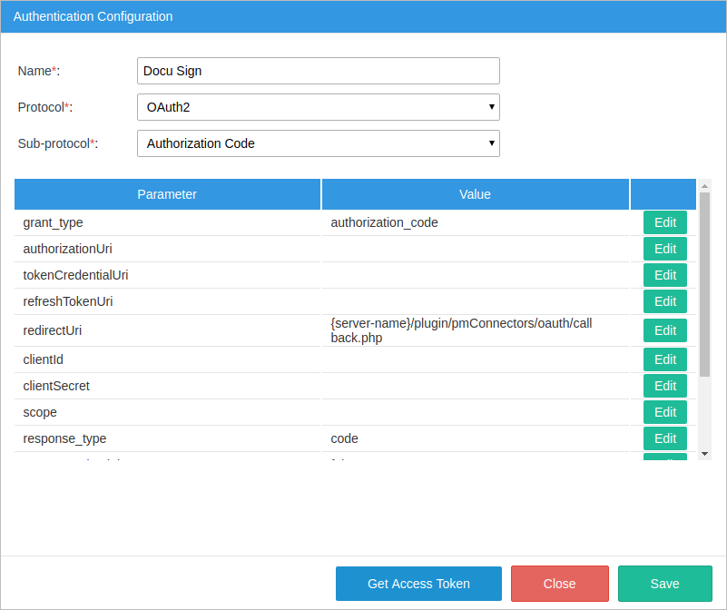
- No authentication
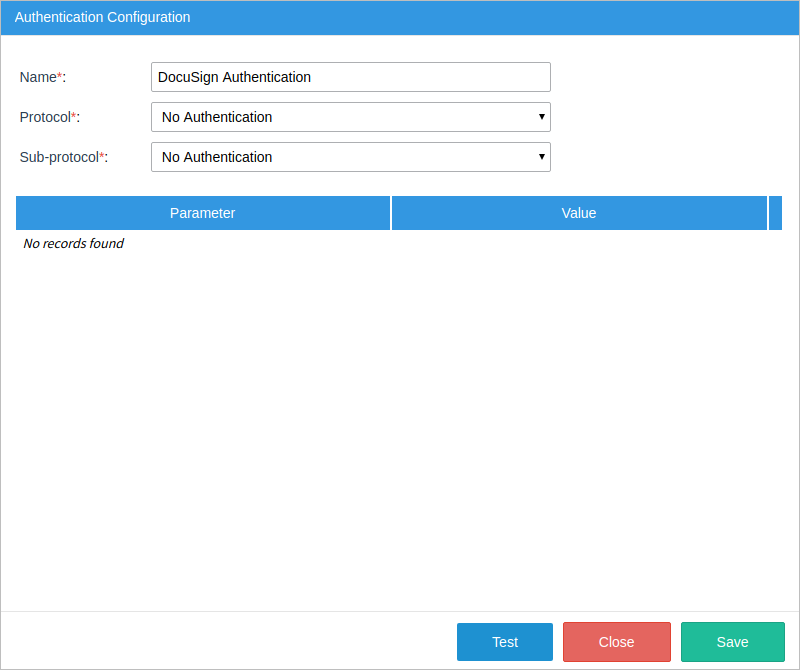
Service
The service is automatically downloaded as Docu Sign.

Click Edit to see the service details and the DocuSign version with which connectors are connected.
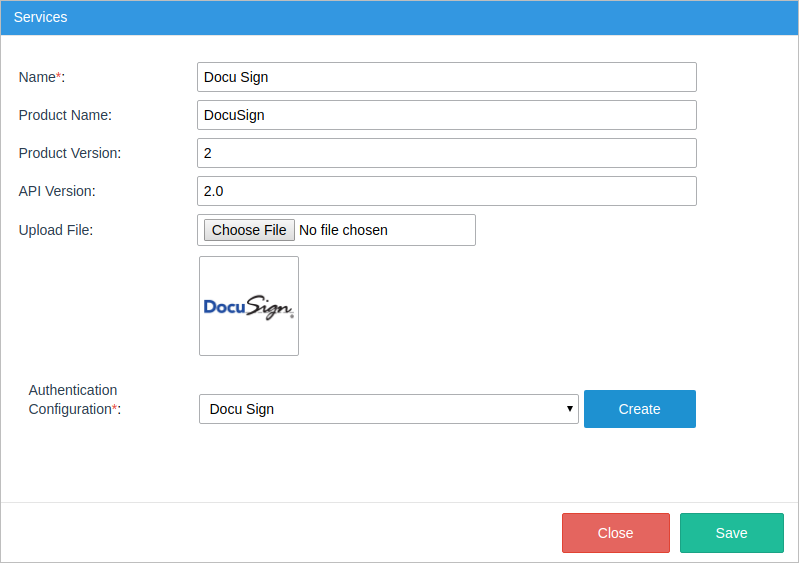
Designing the Process
Go to the ProcessMaker Designer and create the following process.
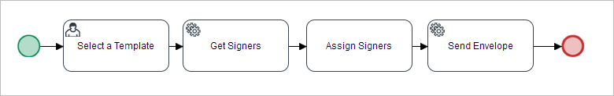
Create the following variables:
- Template - String
- Message - String
- Subject - String
- SignersList - String
- templateDropdown - Array
- roleDropdown - Array
- roleDropdown - Array
- gridSigners - Grid
- ResponseGetReceipts - Object
- responseObject - Object
Create a Dynaform named "Sign Request", where the user will select the template that will be used to create a document and will define the subject, and message of the email that will contain the DocuSign document.
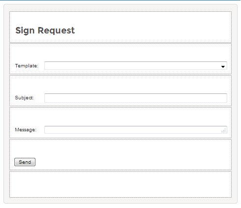
This Dynaform will contain the following controls:
| ID | Label | Control Type | Related Variable |
| Sign Request | Sign Request | Title | |
| Template | Template: | Dropdown | Template |
| Subject | Subject: | Text | Subject |
| Message | Message: | Textarea | Message |
Click on the Template dropdown control and search for its Datasource property. Select the array variable option and assign the "@@templateDropdown" variable inside its Data Variable property.
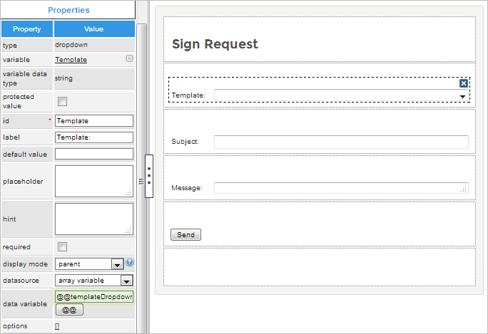
Create a trigger named "getTemplates" with the following code:
$templates=$messageArray->message->envelopeTemplates;
@@templateDropdown=array();
foreach ($templates as $template){
array_push(@@templateDropdown,array($template->templateId, $template->name));
}
This trigger executes the getTemplates connector and stores a part of the message response in the @@templateDropdown variable. Then, it populates the template dropdown with the names of the DocuSign templates.
Assign the Dynaform to the "Select a Template" task, and the getTemplates trigger before this Dynaform.
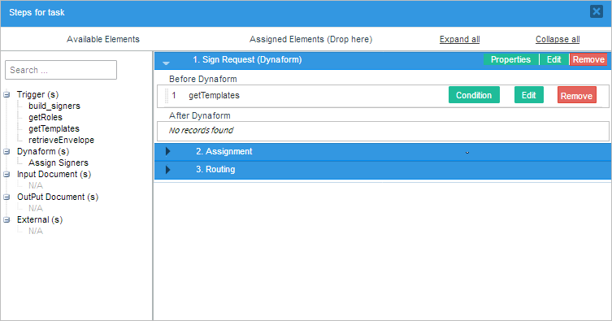
Create a second Dynaform named "Assign Signers" to assign three ProcessMaker users as DocuSign signers to approve the document.
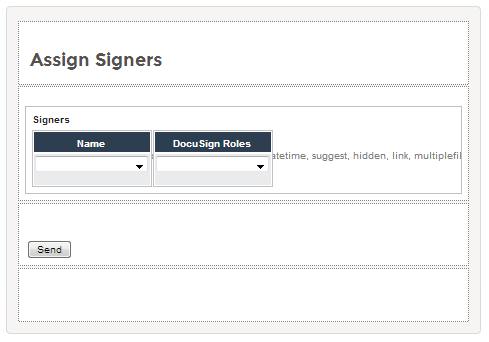
The second Dynaform will contain the following controls:
| ID | Label | Control Type | Related Variable |
| gridSigners | Signers | Grid | gridSigners |
| dsigners | Name | Dropdown | |
| droles | DocuSign Roles | Dropdown | |
| Send | Button |
After the controls are placed, click on the dsigners dropdown control, search for its SQL property and add the query below so the names of all the active users will be listed in this control.
Then, click on the droles dropdown control and search for its Datasource property. Select "array variable" and assign the "@@roleDropdown" variable inside its Data Variable property.
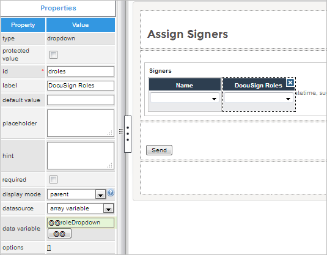
Save the changes and close the Dynaform. Create a second trigger named "getRoles" that will filter the response of the getTemplateRecipients connector and populate the DocuSign dropdown with the roles configured in the DocuSign template.
@@responsedyn = $recipients[0]->roleName.count($recipients);
@@roleDropdown = array();
for ($x=0; $x < count($recipients); $x++) {
array_push(@@roleDropdown, array($recipients[$x]->roleName, $recipients[$x]->roleName));
}
Create a third trigger, named "build_signers", to construct the body that will be sent when the CreateandSendEnvelopeID connector is executed through the "Send Envelope" service task.
for ($x = 1; $x <= count(@=gridSigners); $x++) {
$tempArray[] = array(
"roleName" => @=gridSigners[$x]["droles"],
"name" => @=gridSigners[$x]["dsigners_label"],
"email" => @=gridSigners[$x]["dsigners"],
"recipientId"=> strval($x)
);
}
@@SignersList = json_encode($tempArray);
Assign the "Assign Signers" Dynaform to the "Assign Signers" task, and place the getTemplatesRecipients trigger before the Dynaform and the build_signers trigger after.
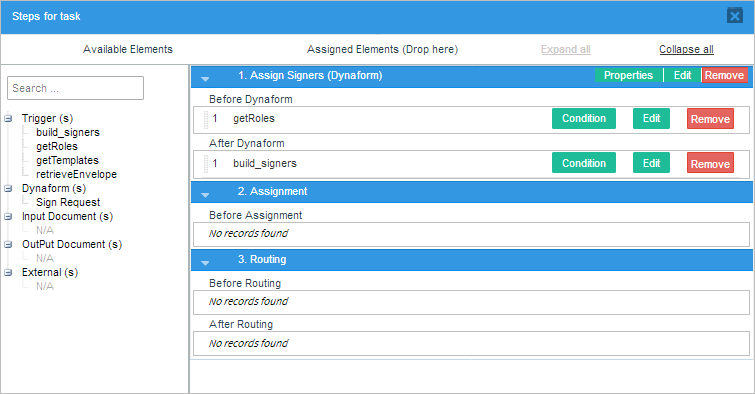
Configure the Get Signers service task by right-clicking on the task and selecting Properties. The Service Task window displays. Select DocuSign in the Category dropdown, and the getTemplateRecipients connector in the Connectors field, as shown in the image below. The Description, Method and URL fields, as well as the Headers section, will be filled in automatically. Select "DocuSign authentication" in the Configuration Auth field.

The URL of the connector has a path parameter that needs to be set. Assign the @@Template variable to the templateID parameter in the Path Parameters section.

Then, assign the @&ResponseGetReceipts object variable to the Variable for the returned value field.
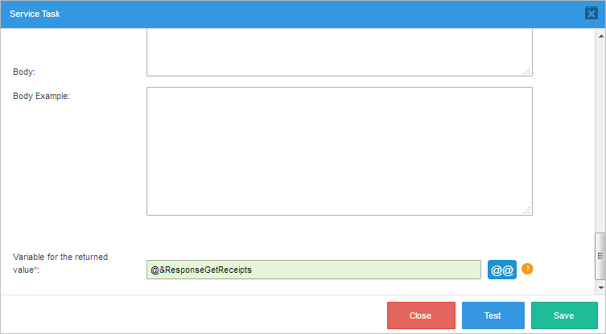
Save the configuration by clicking Save.
Configure the "Send Envelope" service task by going to its properties. The Service Task window displays. Select the DocuSign service in the Category dropdown and the CreateEnvelopeFromTemplateID connector in the Connectors dropdown. The Description, Method and URL fields, as well as the Headers section, will be filled in automatically. Select DocuSign Authentication in the Configuration Auth field.
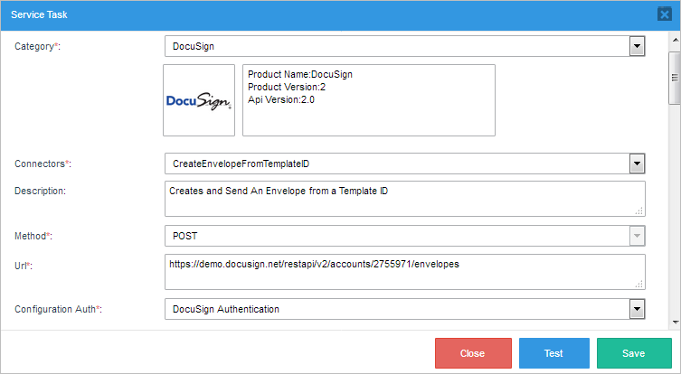
In the Body field place the following JSON:
"status" : "sent",
"emailBlurb" : "@@Message",
"emailSubject" : "@@Subject",
"templateId" : "@@Template",
"templateRoles" : "@@SignersList"
}

Assign the @&responsObject object variable in the Variable to hold return value field.
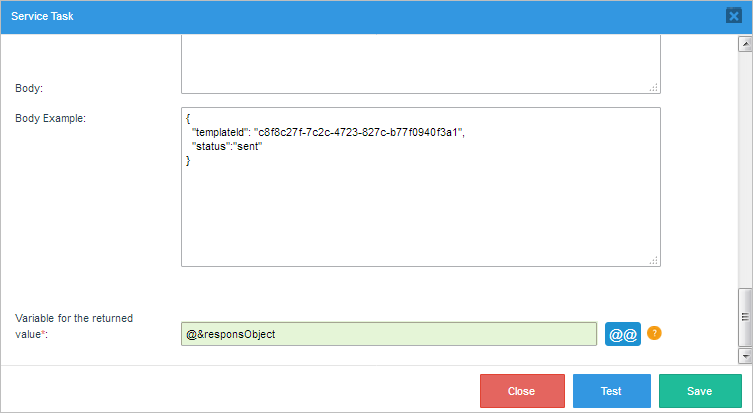
Save all the changes.
Running a Case
After starting a case, the Sign Request Dynaform displays. Select the DocuSign template that was created during the DocuSign configuration, "Security Deposit Receipt", and fill in a subject and a message for the email. Click Send.

The case is routed to the "Get Signers" service task, which will execute the getTemplateRecipients connector to retrieve the roles configured in the template.
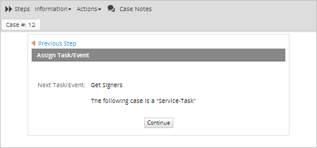
The case is routed to the next assigned user and is listed in that user's inbox. In this example, the case #12.
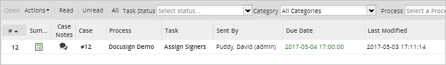
After the user opens the case, the second Dynaform displays. Remember that the DocuSign template was configured to have three roles: Signer1, Signer2 and Signer3. Therefore, add two more rows to the Signers grid and assign one ProcessMaker user to each role. Note that a role can NOT be assigned to more than one user. To continue click Send.
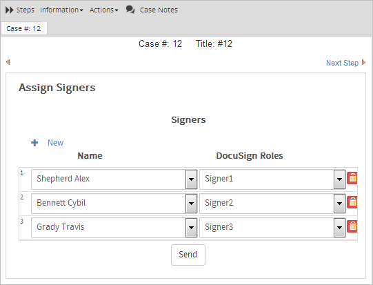
The case is routed to the Send Envelope service task, which creates a DocuSign document based on the selected template and will send an email to the users assigned in the Signers grid.
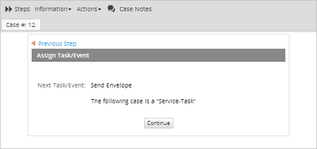
The case is complete. The email, like the one shown in the image below, is sent to the three ProcessMaker users assigned to the DocuSign roles.
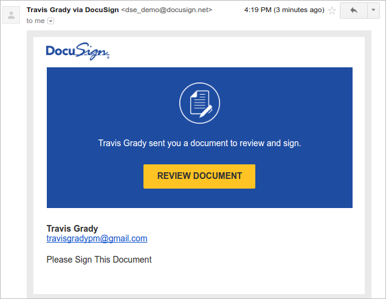
After the user clicks the Review Document button, a new tab will open with the following message:
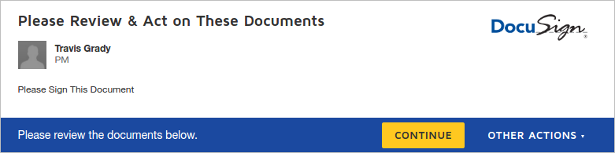
Click the Continue button to display the document. Note that each user can be configured differently based on what the user must fill in to the document. In this example, the assigned users only have to sign the document.

Therefore, choose the Signature control and drop it onto the document. A window displays where the signature can be created.
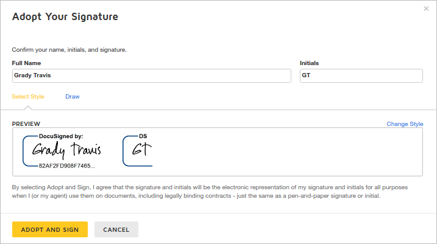
Click Adopt and Sign to place the user's signature into the document.

Click Finish. A new page with the message "You're done" displays.
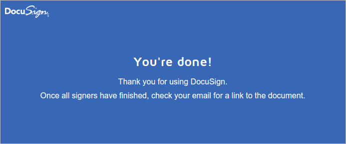
Once all the assigned users sign the document, an email saying that the document signing process is complete is sent to each user automatically.
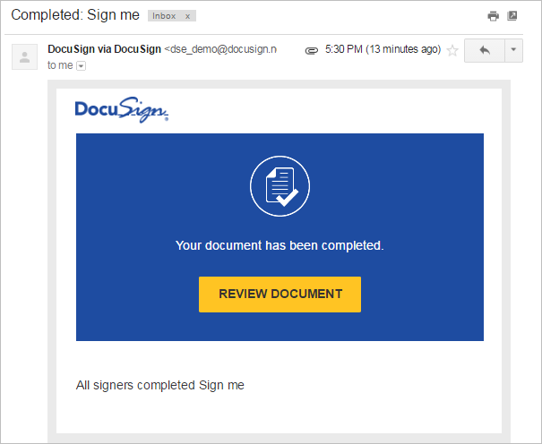